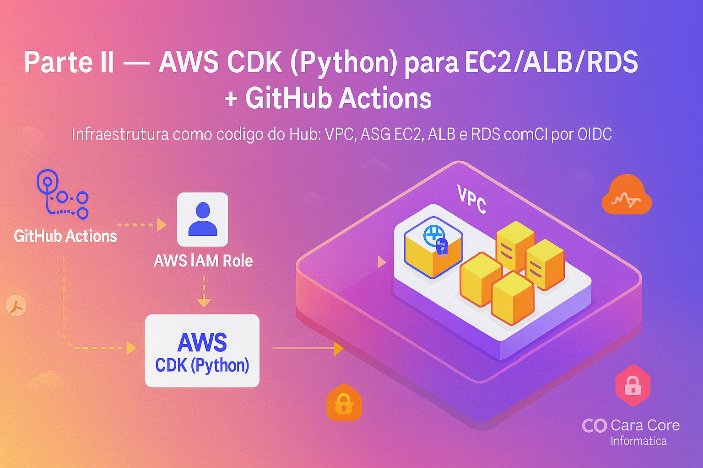

Gerenciando EC2 (Parte II) — AWS CDK (Python) para EC2/ALB/RDS + GitHub Actions
Na Parte I (Artigo 50), apresentamos a visão e os blocos principais do Hub: DNS/SSL (Route 53/ACM) → Application Load Balancer → EC2 (Tomcat/WildFly, Java 17) → RDS PostgreSQL, com segurança mÃnima bem definida, observabilidade e um desenho que funciona do centro à s bordas. Também discutimos por que times pequenos ganham muito ao tratar a infraestrutura como código: previsibilidade, reprodutibilidade e auditoria.
Agora, na Parte II, transformamos aquele desenho em código com AWS CDK (Python). Vamos provisionar VPC, Security Groups, ALB, Auto Scaling Group de EC2 e RDS PostgreSQL, e fechar o ciclo com um pipeline de GitHub Actions via OIDC (sem chaves estáticas) para executar synth/diff/deploy. Objetivo: tornar a infraestrutura do Hub versionada, segura e rápida de evoluir.
1) Pré‑requisitos e estrutura do projeto
cdk bootstrap aws://SEU_ACCOUNT_ID/sa-east-1hub-infra/
├─ app.py
├─ requirements.txt
└─ hub_infra/
└─ hub_infra_stack.pyrequirements.txt:
aws-cdk-lib==2.154.1
constructs>=10.0.0,<11.0.02) app.py — ponto de entrada do CDK
#!/usr/bin/env python3
import os
import aws_cdk as cdk
from hub_infra.hub_infra_stack import HubInfraStack
app = cdk.App()
env = cdk.Environment(
account=os.getenv('CDK_DEFAULT_ACCOUNT'),
region=os.getenv('CDK_DEFAULT_REGION', 'sa-east-1')
)
HubInfraStack(app, "HubInfraStack", env=env)
app.synth()3) hub_infra_stack.py — ALB → EC2 (ASG) → RDS PostgreSQL
Exemplo compacto que cria VPC, Security Groups, um ALB público, um Auto Scaling Group de EC2 (Amazon Linux 2023) com SSM e Tomcat via UserData, e um banco RDS PostgreSQL 15.
from constructs import Construct
from aws_cdk import (
Stack, Duration, RemovalPolicy,
aws_ec2 as ec2,
aws_autoscaling as asg,
aws_elasticloadbalancingv2 as elbv2,
aws_rds as rds,
aws_iam as iam
)
class HubInfraStack(Stack):
def __init__(self, scope: Construct, construct_id: str, **kwargs) -> None:
super().__init__(scope, construct_id, **kwargs)
# VPC padrão com sub-redes públicas/privadas
vpc = ec2.Vpc(self, "Vpc", max_azs=2)
# Security Groups
alb_sg = ec2.SecurityGroup(self, "AlbSg", vpc=vpc, allow_all_outbound=True)
alb_sg.add_ingress_rule(ec2.Peer.any_ipv4(), ec2.Port.tcp(80), "HTTP público")
app_sg = ec2.SecurityGroup(self, "AppSg", vpc=vpc, allow_all_outbound=True)
app_sg.add_ingress_rule(alb_sg, ec2.Port.tcp(8080), "Tráfego do ALB para app")
db_sg = ec2.SecurityGroup(self, "DbSg", vpc=vpc, allow_all_outbound=True)
db_sg.add_ingress_rule(app_sg, ec2.Port.tcp(5432), "App → Postgres")
# RDS PostgreSQL 15
db = rds.DatabaseInstance(
self, "Postgres",
engine=rds.DatabaseInstanceEngine.postgres(version=rds.PostgresEngineVersion.V15_5),
vpc=vpc,
vpc_subnets=ec2.SubnetSelection(subnet_type=ec2.SubnetType.PRIVATE_WITH_EGRESS),
security_groups=[db_sg],
allocated_storage=20,
max_allocated_storage=100,
multi_az=False,
deletion_protection=False,
removal_policy=RemovalPolicy.DESTROY,
credentials=rds.Credentials.from_generated_secret("dbadmin"),
publicly_accessible=False,
database_name="hub"
)
# Perfil/Role para EC2 com SSM e acesso básico a logs/SSM
role = iam.Role(self, "Ec2Role",
assumed_by=iam.ServicePrincipal("ec2.amazonaws.com"))
role.add_managed_policy(
iam.ManagedPolicy.from_aws_managed_policy_name("AmazonSSMManagedInstanceCore")
)
# Launch template + UserData para Tomcat 9 e Java 17
user_data = ec2.UserData.for_linux()
user_data.add_commands(
"yum update -y",
"yum install -y java-17-amazon-corretto-headless", # Java 17
"yum install -y tomcat", # Tomcat 9
"systemctl enable tomcat",
"systemctl start tomcat",
)
lt = ec2.LaunchTemplate(self, "AppLt",
machine_image=ec2.MachineImage.latest_amazon_linux2023(),
instance_type=ec2.InstanceType("t3.small"),
role=role,
security_group=app_sg,
user_data=user_data)
group = asg.AutoScalingGroup(
self, "Asg",
vpc=vpc,
launch_template=lt,
desired_capacity=1,
min_capacity=1,
max_capacity=3,
vpc_subnets=ec2.SubnetSelection(subnet_type=ec2.SubnetType.PRIVATE_WITH_EGRESS)
)
# ALB + Target Group para porta 8080
alb = elbv2.ApplicationLoadBalancer(self, "Alb", vpc=vpc, internet_facing=True, security_group=alb_sg)
listener = alb.add_listener("Http", port=80, open=True)
listener.add_targets("AppTg", port=8080, targets=[group])
# Health check básico (padrão GET /)
# Para customizar: listener.targets[0].configure_health_check(path='/health')
# SaÃda útil
self.alb_dns = alb.load_balancer_dns_name4) Parâmetros e segredos (SSM/Secrets Manager)
Armazene strings de conexão/segredos fora do código. No exemplo acima, as credenciais do RDS são geradas em um segredo gerenciado. Use o SSM/Secrets no runtime do app (via SSM Agent/SDK) para buscar configurações.
5) GitHub Actions (OIDC) — synth/diff/deploy
Workflow com dois fluxos: PR (synth/diff) e main (deploy). Requer um Role no AWS IAM confiando no provedor OIDC do GitHub e um segredo AWS_CDK_ROLE_ARN no repositório.
name: cdk
on:
pull_request:
paths:
- 'hub-infra/**'
push:
branches: [ main ]
paths:
- 'hub-infra/**'
permissions:
id-token: write
contents: read
env:
AWS_REGION: sa-east-1
jobs:
pr-check:
if: github.event_name == 'pull_request'
runs-on: ubuntu-latest
steps:
- uses: actions/checkout@v4
- uses: actions/setup-node@v4
with:
node-version: '20'
- uses: actions/setup-python@v5
with:
python-version: '3.11'
- name: Install CDK CLI
run: npm install -g aws-cdk
- name: Install Python deps
working-directory: hub-infra
run: |
python -m pip install --upgrade pip
pip install -r requirements.txt
- name: Configure AWS (OIDC)
uses: aws-actions/configure-aws-credentials@v4
with:
role-to-assume: ${{ secrets.AWS_CDK_ROLE_ARN }}
aws-region: ${{ env.AWS_REGION }}
- name: CDK synth
working-directory: hub-infra
run: cdk synth
- name: CDK diff
working-directory: hub-infra
run: cdk diff
deploy:
if: github.event_name == 'push'
runs-on: ubuntu-latest
steps:
- uses: actions/checkout@v4
- uses: actions/setup-node@v4
with:
node-version: '20'
- uses: actions/setup-python@v5
with:
python-version: '3.11'
- name: Install CDK CLI
run: npm install -g aws-cdk
- name: Install Python deps
working-directory: hub-infra
run: |
python -m pip install --upgrade pip
pip install -r requirements.txt
- name: Configure AWS (OIDC)
uses: aws-actions/configure-aws-credentials@v4
with:
role-to-assume: ${{ secrets.AWS_CDK_ROLE_ARN }}
aws-region: ${{ env.AWS_REGION }}
- name: Deploy
working-directory: hub-infra
run: cdk deploy --require-approval never6) Operação do dia a dia
cdk diffnos PRs dá previsibilidade antes do deploy na main.- Parâmetros por ambiente com
-c stage=dev|prodpara tamanhos e nomes. - Monitore ALB/EC2/RDS no CloudWatch com alarmes de CPU/HTTP 5xx/latência.
Conclusão geral da série (Partes I e II)
Parte I: alinhamos a narrativa e as decisões arquiteturais — Route 53/ACM → ALB → EC2 (Tomcat/WildFly) → RDS PostgreSQL — com foco em simplicidade operável por times enxutos.
Parte II: codificamos essa arquitetura com AWS CDK (Python), externalizamos segredos e parametrizações, e automatizamos o ciclo com GitHub Actions (OIDC) para synth/diff/deploy.
BenefÃcios concretos:
• Previsibilidade e menor risco: cdk diff antecipa mudanças antes do deploy.
• Segurança aprimorada: OIDC elimina chaves estáticas e reduz superfÃcie de ataque.
• Escala e custo sob controle: ASG de EC2 ajusta capacidade; RDS gerenciado simplifica operações.
• Governança: versionamento e auditoria ponta a ponta (infra + pipeline).
Próximos passos recomendados:
• Ativar HTTPS com ACM no ALB; criar estágios (dev/hml/prd) via context (-c stage=...).
• Implantar o aplicativo (WAR/JAR) e avaliar estratégias blue/green no ALB.
• Fortalecer observabilidade (CloudWatch: alarmes CPU/5xx/latência) e rotinas de backup/retention no RDS.
Com esses pilares, o Hub evolui com segurança, consistência e velocidade — do planejamento à operação diária.
Dicionário rápido
- AWS CDK
- Cloud Development Kit — framework para definir infraestrutura como código (IaC) em linguagens como Python.
- IaC
- Infraestrutura como Código — prática de descrever e versionar infraestrutura em arquivos de código.
- EC2
- Elastic Compute Cloud — servidores/VMs na AWS.
- ALB
- Application Load Balancer — balanceador L7 para tráfego HTTP/HTTPS.
- ASG
- Auto Scaling Group — ajusta automaticamente a quantidade de instâncias EC2.
- RDS (PostgreSQL)
- Relational Database Service — banco relacional gerenciado (ex.: PostgreSQL).
- VPC
- Virtual Private Cloud — rede virtual isolada na AWS.
- Security Group (SG)
- Firewall de nÃvel de instância/ENI que controla o tráfego de entrada/saÃda.
- SSM
- AWS Systems Manager — inclui o SSM Agent, automações e o Parameter Store.
- Parameter Store / Secrets Manager
- Serviços para armazenar parâmetros e segredos fora do código.
- OIDC
- OpenID Connect — padrão usado para autenticação federada do GitHub Actions com a AWS IAM Role, sem chaves estáticas.
- GitHub Actions
- Plataforma de CI/CD do GitHub; usada aqui para cdk synth/diff/deploy com OIDC.
Hashtags
Contato
- E-mail: suporte@caracore.com.br
- Site: www.caracore.com.br
- LinkedIn: Cara Core Informática
Conecte-se conosco no LinkedIn para mais conteúdos sobre desenvolvimento e inovação tecnológica!
Seguir no LinkedIn